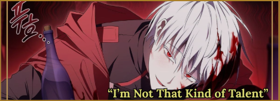
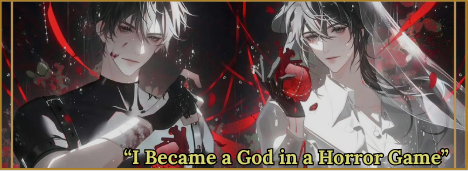
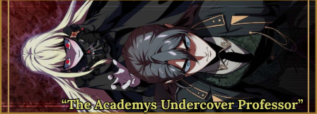

˚౨Biodata of an Eclectic Readerৎ˚
¬∞‚ùÄ‚ãÜ.‡≥ɇøî*:ÔΩ•Welcome to Faiqah's Website!:÷¥÷∂÷∏. ..ìÇÉ ‡£™ ÷¥÷∂÷∏ü™Ω‡ºã‡ºò‡øêÔΩ•
๋ ⭑꒷꒦︶꒷꒦︶ About Me ꒷꒦︶꒷꒦︶⭑๋
Name: N.Faiqah Wiandi Utomo
Born: Jakarta, 11 January 2011
Number: 0877-3946-3838
Address: Indonesia, Depok
Email: nadya.faiqah@alharaki.sch.id
Hobby: Reading, Writing, Designing
Dream Job: Unemployment, but disgustingly rich
Grade & Class: 9th Grade Class An-Nasr "The Victory" or "The Help"
Favourite Subject: Biology, ICT : (Information and Communication Technology)
Personality Traits: Sarcastic, Light-hearted, Selectively Social
MBTI: INFJ-T
Favourite Food: Shakshuka
my favourite item is money. my favourite colours are maroon, gold, and black
üé≤ Roll the Dice of Fate

Click the dice to decide your destiny.....







üìñ My Bookshelf üìñ
üìö The Library of Ruina üìö
Fantasy


Horror
Mystery/Thriller

Romance
Sci-Fi

‚òÅÔ∏èüåê My Socials üåê‚òÅÔ∏è
üéµ My Favourite Songs üéµ
♫⋆｡♪ ₊˚♬ ﾟ.Twisted Wonderland Dorm Songs.ﾟ♬˚₊♪｡⋆♫